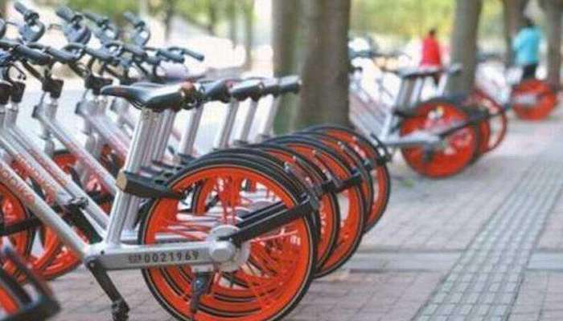

赔上三年青春 男子因“虐待”共享单车被判刑
原创：科技前沿 08-14 09:58
对于虐待共享单车的事件大家都不陌生，虽然现在有城市猎人的存在，任何人也都可以举报，但是虐待共享单车的事件并没有减少，还是人们发泄一种方式，扔到河里，挂到树上，零部件都被卸了，从天桥上各种扔，但是却没有谁因为虐待共享单车而获刑的，一般都是信用分方面的处罚。但是近日，却有人因为扔了共享单车结果被判了3年牢狱之灾。这是怎么回事呢？
在5月份的时候，广州越秀区中山三路东濠涌高架桥东侧人行天桥的无业男子袁某，本来是到处闲逛的，但是有一次他在弯腰低头捡地上的烟头的时候，一不小心却停放的共享单车撞了头。从此之后看着共享单车横竖不顺眼。
终于想到了报复的招数，他将共享单车搬到了天桥上，然后往天桥下扔。正常情况只是摔坏一辆车而已，但是他不偏不倚的如果到了电车的电缆上面，造成了局部断电，致使3路电车停运半个小时。这就比较严重了。

6月1日，袁某被公安人员抓获归案。
8月11日，广州市越秀区人民法院开庭审理此案并判决该男子“危害公共安全罪”，对途经该路段的电车及其它车辆的驾驶安全、行人的人身安全等构成危险，判处有期徒刑三年。